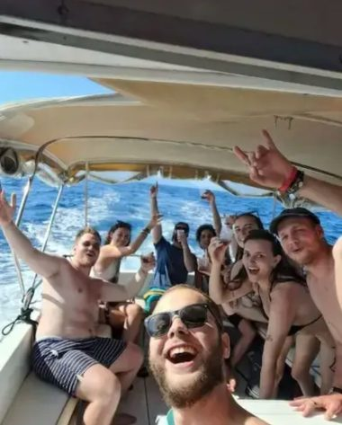

Private boat tours
The boat is just for your group. Island Escape is a full day of island hopping with longer stops and a lunch break in a village. Coastal Discovery takes a few hours, lovely in the late afternoon.
- Island Escape, all day: from 320 € per boat
- Rijeka Bay Experience by speedboat, up to 7 guests: from 260 € per boat
- Coastal Discovery: a few hours, one or two highlights